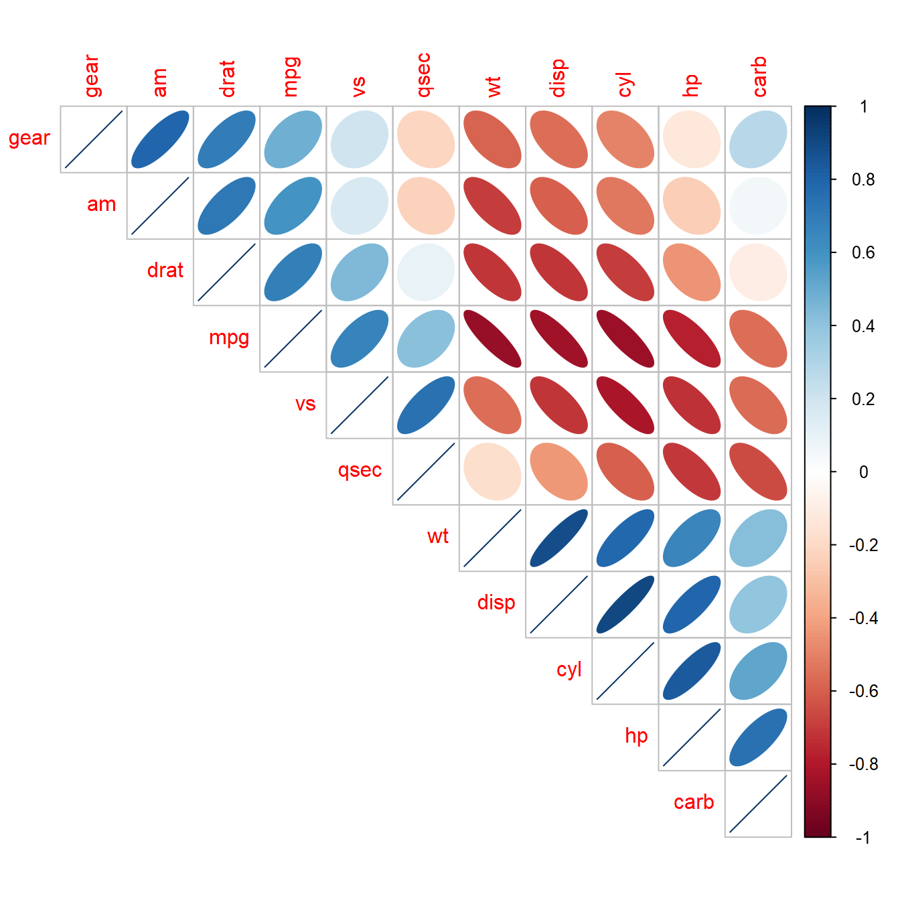
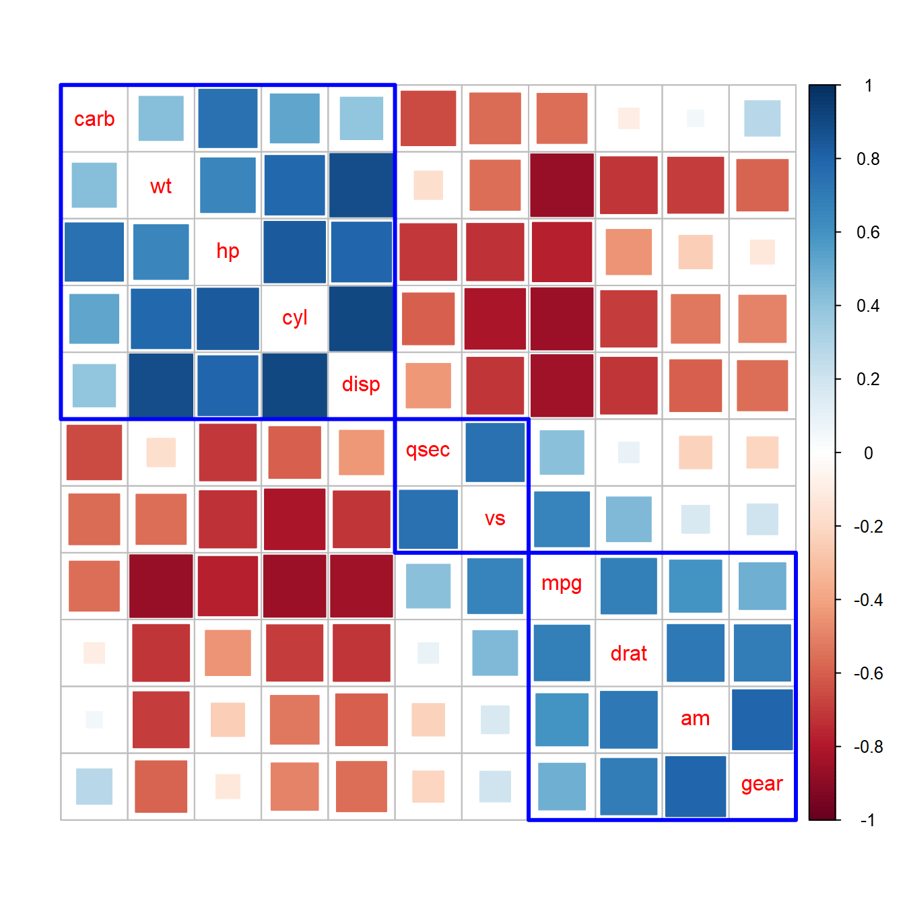
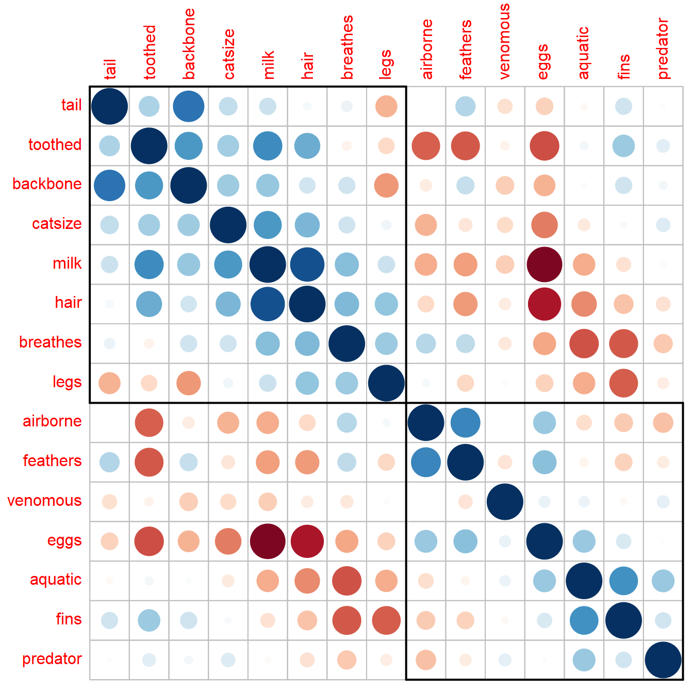
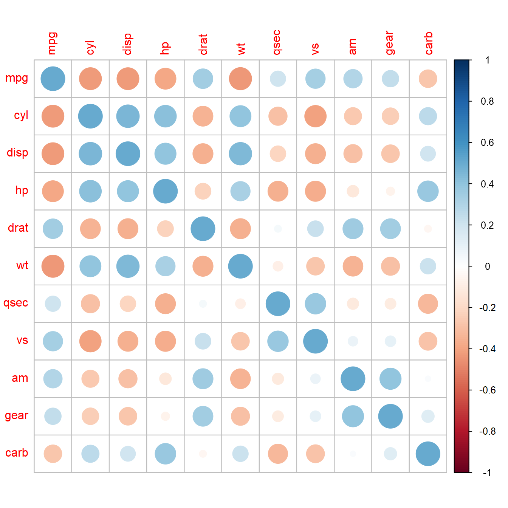

An Introduction to corrplot Package
Taiyun Wei, Viliam Simko
2023-12-11
Source:vignettes/corrplot-intro.Rmd
corrplot-intro.RmdIntroduction
R package corrplot provides a visual exploratory tool on correlation matrix that supports automatic variable reordering to help detect hidden patterns among variables.
corrplot is very easy to use and provides a rich array of plotting options in visualization method, graphic layout, color, legend, text labels, etc. It also provides p-values and confidence intervals to help users determine the statistical significance of the correlations.
corrplot() has about 50 parameters, however the mostly
common ones are only a few. We can get a correlation matrix plot with
only one line of code in most scenes.
The mostly using parameters include method,
type, order, diag, and etc.
There are seven visualization methods (parameter method)
in corrplot package, named 'circle', 'square',
'ellipse', 'number', 'shade',
'color', 'pie'. Color intensity of the glyph
is proportional to the correlation coefficients by default color
setting.
'circle'and'square', the areas of circles or squares show the absolute value of corresponding correlation coefficients.'ellipse', the ellipses have their eccentricity parametrically scaled to the correlation value. It comes from D.J. Murdoch and E.D. Chow’s job, see in section References.'number', coefficients numbers with different color.'color', square of equal size with different color.'shade', similar to'color', but the negative coefficients glyphs are shaded. Method'pie'and'shade'come from Michael Friendly’s job.'pie', the circles are filled clockwise for positive values, anti-clockwise for negative values.
corrplot.mixed() is a wrapped function for mixed
visualization style, which can set the visual methods of lower and upper
triangular separately.
There are three layout types (parameter type):
'full', 'upper' and 'lower'.
The correlation matrix can be reordered according to the correlation matrix coefficients. This is important to identify the hidden structure and pattern in the matrix.
## corrplot 0.92 loaded
corrplot(M, method = 'color', order = 'alphabet')
corrplot(M) # by default, method = 'circle'
corrplot(M, order = 'AOE') # after 'AOE' reorder
corrplot(M, method = 'shade', order = 'AOE', diag = FALSE)
corrplot(M, method = 'square', order = 'FPC', type = 'lower', diag = FALSE)
corrplot(M, method = 'ellipse', order = 'AOE', type = 'upper')
corrplot.mixed(M, order = 'AOE')
corrplot.mixed(M, lower = 'shade', upper = 'pie', order = 'hclust')Reorder a correlation matrix
The details of four order algorithms, named
'AOE', 'FPC', 'hclust',
'alphabet' are as following.
-
'AOE'is for the angular order of the eigenvectors. It is calculated from the order of the angles \(a_i\),\[ a_i = \begin{cases} \arctan (e_{i2}/e_{i1}), & \text{if $e_{i1}>0$;} \newline \arctan (e_{i2}/e_{i1}) + \pi, & \text{otherwise.} \end{cases} \]
where \(e_1\) and \(e_2\) are the largest two eigenvalues of the correlation matrix. See Michael Friendly (2002) for details.
'FPC'for the first principal component order.'hclust'for hierarchical clustering order, and'hclust.method'for the agglomeration method to be used.'hclust.method'should be one of'ward','ward.D','ward.D2','single','complete','average','mcquitty','median'or'centroid'.'alphabet'for alphabetical order.
You can also reorder the matrix ‘manually’ via function
corrMatOrder().
If using 'hclust', corrplot() can draw
rectangles around the plot of correlation matrix based on the results of
hierarchical clustering.
corrplot(M, order = 'hclust', addrect = 2)
corrplot(M, method = 'square', diag = FALSE, order = 'hclust',
addrect = 3, rect.col = 'blue', rect.lwd = 3, tl.pos = 'd')
R package seriation provides the infrastructure for ordering objects with an implementation of several seriation/sequencing/ordination techniques to reorder matrices, dissimilarity matrices, and dendrograms. For more information, see in section References.
We can reorder the matrix via seriation package and then corrplot it. Here are some examples.
## Warning: package 'seriation' was built under R version 4.3.2
list_seriation_methods('matrix')## [1] "AOE" "BEA" "BEA_TSP" "CA" "Heatmap" "Identity"
## [7] "LLE" "Mean" "PCA" "PCA_angle" "Random" "Reverse"
list_seriation_methods('dist')## [1] "ARSA" "BBURCG" "BBWRCG" "Enumerate"
## [5] "GSA" "GW" "GW_average" "GW_complete"
## [9] "GW_single" "GW_ward" "HC" "HC_average"
## [13] "HC_complete" "HC_single" "HC_ward" "Identity"
## [17] "isomap" "isoMDS" "MDS" "MDS_angle"
## [21] "metaMDS" "monoMDS" "OLO" "OLO_average"
## [25] "OLO_complete" "OLO_single" "OLO_ward" "QAP_2SUM"
## [29] "QAP_BAR" "QAP_Inertia" "QAP_LS" "R2E"
## [33] "Random" "Reverse" "Sammon_mapping" "SGD"
## [37] "Spectral" "Spectral_norm" "SPIN_NH" "SPIN_STS"
## [41] "TSP" "VAT"
data(Zoo)
Z = cor(Zoo[, -c(15, 17)])
dist2order = function(corr, method, ...) {
d_corr = as.dist(1 - corr)
s = seriate(d_corr, method = method, ...)
i = get_order(s)
return(i)
}Methods 'PCA_angle' and 'HC' in
seriation, are same as 'AOE' and
'hclust' separately in corrplot() and
corrMatOrder().
Here are some plots after seriation.
# Fast Optimal Leaf Ordering for Hierarchical Clustering
i = dist2order(Z, 'OLO')
corrplot(Z[i, i], cl.pos = 'n')
# Quadratic Assignment Problem
i = dist2order(Z, 'QAP_2SUM')
corrplot(Z[i, i], cl.pos = 'n')
# Multidimensional Scaling
i = dist2order(Z, 'MDS_nonmetric')## Warning in get_seriation_method("dist", method): seriation method
## 'MDS_nonmetric' is now deprecated and will be removed in future releases. Using
## `isoMDS`
corrplot(Z[i, i], cl.pos = 'n')
# Simulated annealing
i = dist2order(Z, 'ARSA')
corrplot(Z[i, i], cl.pos = 'n')
# TSP solver
i = dist2order(Z, 'TSP')
corrplot(Z[i, i], cl.pos = 'n')
# Spectral seriation
i = dist2order(Z, 'Spectral')
corrplot(Z[i, i], cl.pos = 'n')corrRect() can add rectangles on the plot with three
ways(parameter index, name and
namesMat) after corrplot(). We can use pipe
operator *>% in package magrittr with more
convenience. Since R 4.1.0, |> is supported without
extra package.
library(magrittr)
# Rank-two ellipse seriation, use index parameter
i = dist2order(Z, 'R2E')
corrplot(Z[i, i], cl.pos = 'n') %>% corrRect(c(1, 9, 15))
Change color spectra, color-legend and text-legend
We can get sequential and diverging colors from COL1()
and COL2(). The color palettes are borrowed from
RColorBrewer package.
Notice: the middle color getting from
COL2() is fixed to '#FFFFFF'(white), thus we
can visualizing element 0 with white color.
-
COL1(): Get sequential colors, suitable for visualize a non-negative or non-positive matrix (e.g. matrix in [0, 20], or [-100, -10], or [100, 500]). -
COL2(): Get diverging colors, suitable for visualize a matrix which elements are partly positive and partly negative (e.g. correlation matrix in [-1, 1], or [-20, 100]).
The colors of the correlation plots can be customized by
col in corrplot(). They are distributed
uniformly in col.lim interval.
-
col: vector, the colors of glyphs. They are distributed uniformly incol.liminterval. By default,- If
is.corrisTRUE,colwill beCOL2('RdBu', 200). - If
is.corrisFALSE,- and
corris a non-negative or non-positive matrix,colwill beCOL1('YlOrBr', 200); - otherwise (elements are partly positive and partly negative),
colwill beCOL2('RdBu', 200).
- and
- If
-
col.lim: the limits (x1, x2) interval for assigning color bycol. By default,-
col.limwill bec(-1, 1)whenis.corrisTRUE, -
col.limwill bec(min(corr), max(corr))whenis.corrisFALSE. -
NOTICE: if you set
col.limwhenis.corrisTRUE, the assigning colors are still distributed uniformly in [-1, 1], it only affect the display on color-legend.
-
-
is.corr: logical, whether the input matrix is a correlation matrix or not. The default value isTRUE. We can visualize a non-correlation matrix by settingis.corr = FALSE.
Here all diverging colors from COL2() and sequential
colors from COL1() are shown below.
Diverging colors:
Sequential colors:
COL1(sequential = c("Oranges", "Purples", "Reds", "Blues", "Greens",
"Greys", "OrRd", "YlOrRd", "YlOrBr", "YlGn"), n = 200)
COL2(diverging = c("RdBu", "BrBG", "PiYG", "PRGn", "PuOr", "RdYlBu"), n = 200)In addition, function colorRampPalette() is very
convenient for generating color spectrum.
Parameters group cl.* is for color-legend. The
common-using are:
-
cl.posis for the position of color labels. It is character or logical. If character, it must be one of'r'(means right, default iftype='upper'or'full'),'b'(means bottom, default iftype='lower') or'n'(means don’t draw color-label). -
cl.ratiois to justify the width of color-legend, 0.1~0.2 is suggested.
Parameters group tl.* is for text-legend. The
common-using are:
-
tl.posis for the position of text labels. It is character or logical. If character, it must be one of'lt','ld','td','d','l'or'n'.'lt'(default iftype='full') means left and top,'ld'(default iftype='lower') means left and diagonal,'td'(default iftype='upper') means top and diagonal(near),'d'means diagonal,'l'means left,'n'means don’t add text-label. -
tl.cexis for the size of text label (variable names). -
tl.srtis for text label string rotation in degrees.
corrplot(M, method = 'square', order = 'AOE', addCoef.col = 'black', tl.pos = 'd',
cl.pos = 'n', col = COL2('BrBG'))
## bottom color legend, diagonal text legend, rotate text label
corrplot(M, order = 'AOE', cl.pos = 'b', tl.pos = 'd',
col = COL2('PRGn'), diag = FALSE)
Visualize non-correlation matrix, NA value and math label
We can visualize a non-correlation matrix by set
is.corr=FALSE, and assign colors by col.lim.
If the matrix have both positive and negative values, the matrix
transformation keep every values positiveness and negativeness.
If your matrix is rectangular, you can adjust the aspect ratio with
the win.asp parameter to make the matrix rendered as a
square.
## matrix in [20, 26], grid.col
N1 = matrix(runif(80, 20, 26), 8)
corrplot(N1, is.corr = FALSE, col.lim = c(20, 30), method = 'color', tl.pos = 'n',
col = COL1('YlGn'), cl.pos = 'b', addgrid.col = 'white', addCoef.col = 'grey50')
## matrix in [-15, 10]
N2 = matrix(runif(80, -15, 10), 8)
## using sequential colors, transKeepSign = FALSE
corrplot(N2, is.corr = FALSE, transKeepSign = FALSE, method = 'color', col.lim = c(-15, 10),
tl.pos = 'n', col = COL1('YlGn'), cl.pos = 'b', addCoef.col = 'grey50')## Warning in title(title, ...): "transKeepSign" is not a graphical parameter
## using diverging colors, transKeepSign = TRUE (default)
corrplot(N2, is.corr = FALSE, col.lim = c(-15, 10),
tl.pos = 'n', col = COL2('PiYG'), cl.pos = 'b', addCoef.col = 'grey50')
## using diverging colors
corrplot(N2, is.corr = FALSE, method = 'color', col.lim = c(-15, 10), tl.pos = 'n',
col = COL2('PiYG'), cl.pos = 'b', addCoef.col = 'grey50')Notice: when is.corr is TRUE,
col.lim only affect the color legend If you change it, the
color on correlation matrix plot is still assigned on
c(-1, 1)
# when is.corr=TRUE, col.lim only affect the color legend display
corrplot(M/2)
By default, corrplot renders NA values as
'?' characters. Using na.label parameter, it
is possible to use a different value (max. two characters are
supported).
Since version 0.78, it is possible to use plotmath
expression in variable names. To activate plotmath rendering, prefix
your label with '$'.
Visualize p-value and confidence interval
corrplot() can also visualize p-value and confidence
interval on the correlation matrix plot. Here are some important
parameters.
About p-value:
-
p.matis the p-value matrix, ifNULL, parametersig.level,insig, pch,pch.col,pch.cexare invalid. -
sig.levelis significant level, with default value 0.05. If the p-value inp-matis bigger thansig.level, then the corresponding correlation coefficient is regarded as insignificant. Ifinsigis'label_sig',sig.levelcan be an increasing vector of significance levels, in which casepchwill be used once for the highest p-value interval and multiple times (e.g.'*','**','***') for each lower p-value interval. -
insigCharacter, specialized insignificant correlation coefficients,'pch'(default),'p-value','blank','n', or'label_sig'. If'blank', wipe away the corresponding glyphs; if'p-value', add p-values the corresponding glyphs; if'pch', add characters (see pch for details) on corresponding glyphs; if'n', don’t take any measures; if'label_sig', mark significant correlations withpch(seesig.level). -
pchis for adding character on the glyphs of insignificant correlation coefficients (only valid when insig is'pch'). See?par.
About confidence interval:
-
plotCIis character for the method of plotting confidence interval. If'n', don’t plot confidence interval. If'rect', plot rectangles whose upper side means upper bound and lower side means lower bound respectively. -
lowCI.matis the matrix of the lower bound of confidence interval. -
uppCI.matis the Matrix of the upper bound of confidence interval.
We can get p-value matrix and confidence intervals matrix by
cor.mtest() which returns a list containing:
-
pis the p-values matrix. -
lowCIis the lower bound of confidence interval matrix. -
uppCIis the lower bound of confidence interval matrix.
testRes = cor.mtest(mtcars, conf.level = 0.95)
## specialized the insignificant value according to the significant level
corrplot(M, p.mat = testRes$p, sig.level = 0.10, order = 'hclust', addrect = 2)
## leave blank on non-significant coefficient
## add significant correlation coefficients
corrplot(M, p.mat = testRes$p, method = 'circle', type = 'lower', insig='blank',
addCoef.col ='black', number.cex = 0.8, order = 'AOE', diag=FALSE)
## leave blank on non-significant coefficient
## add all correlation coefficients
corrplot(M, p.mat = testRes$p, method = 'circle', type = 'lower', insig='blank',
order = 'AOE', diag = FALSE)$corrPos -> p1
text(p1$x, p1$y, round(p1$corr, 2))
## add p-values on no significant coefficients
corrplot(M, p.mat = testRes$p, insig = 'p-value')
## add all p-values
corrplot(M, p.mat = testRes$p, insig = 'p-value', sig.level = -1)
## add significant level stars
corrplot(M, p.mat = testRes$p, method = 'color', diag = FALSE, type = 'upper',
sig.level = c(0.001, 0.01, 0.05), pch.cex = 0.9,
insig = 'label_sig', pch.col = 'grey20', order = 'AOE')
## add significant level stars and cluster rectangles
corrplot(M, p.mat = testRes$p, tl.pos = 'd', order = 'hclust', addrect = 2,
insig = 'label_sig', sig.level = c(0.001, 0.01, 0.05),
pch.cex = 0.9, pch.col = 'grey20')Visualize confidence interval.
# Visualize confidence interval
corrplot(M, lowCI = testRes$lowCI, uppCI = testRes$uppCI, order = 'hclust',
tl.pos = 'd', rect.col = 'navy', plotC = 'rect', cl.pos = 'n')
# Visualize confidence interval and cross the significant coefficients
corrplot(M, p.mat = testRes$p, lowCI = testRes$lowCI, uppCI = testRes$uppCI,
addrect = 3, rect.col = 'navy', plotC = 'rect', cl.pos = 'n')References
Michael Friendly (2002). Corrgrams: Exploratory displays for correlation matrices. The American Statistician, 56, 316–324.
D.J. Murdoch, E.D. Chow (1996). A graphical display of large correlation matrices. The American Statistician, 50, 178–180.
Michael Hahsler, Christian Buchta and Kurt Hornik (2020). seriation: Infrastructure for Ordering Objects Using Seriation. R package version 1.2-9. https://CRAN.R-project.org/package=seriation
Hahsler M, Hornik K, Buchta C (2008). “Getting things in order: An introduction to the R package seriation.” Journal of Statistical Software, 25(3), 1-34. ISSN 1548-7660, doi: 10.18637/jss.v025.i03 (URL: https://doi.org/10.18637/jss.v025.i03), <URL: https://www.jstatsoft.org/v25/i03/>.